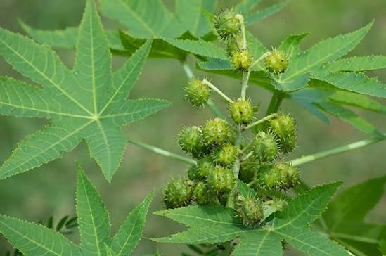

Kandungan Utama
- Flavonoid
- Tanin
- Saponin
- Alkaloid
- Minyak atsiri
- Polifenol
- Antioksidan alami
- Asam risinoleat (terdapat pada minyak biji jarak/castor oil)


Nama Ilmiah : Jatropha curcas L.
Daun jarak merupakan salah satu tanaman obat keluarga (TOGA) yang telah lama dimanfaatkan dalam pengobatan tradisional di Indonesia. Selain digunakan sebagai tanaman pagar, daun jarak juga dikenal memiliki berbagai senyawa aktif yang bermanfaat bagi kesehatan. Dalam pemanfaatan tradisional, daun jarak sering digunakan sebagai obat luar untuk membantu meredakan demam, mengurangi peradangan, serta membantu mengatasi pegal dan nyeri ringan.
Daun jarak memiliki berbagai manfaat yang telah dikenal dalam pengobatan tradisional. Kandungan flavonoid, tanin, dan saponin dipercaya membantu mengurangi peradangan, meredakan nyeri ringan, serta mempercepat proses penyembuhan luka. Daun jarak juga sering dimanfaatkan sebagai kompres alami untuk membantu menurunkan demam pada anak, mengurangi pembengkakan, serta membantu meredakan pegal dan nyeri otot. Sementara itu, minyak biji jarak atau castor oil banyak digunakan sebagai pelembap kulit dan rambut, serta sebagai pencahar dengan penggunaan sesuai anjuran tenaga kesehatan.
Biji tanaman jarak mengandung senyawa beracun sehingga tidak boleh dikonsumsi secara langsung. Penggunaan daun jarak sebagai obat tradisional umumnya dilakukan untuk pemakaian luar. Apabila menggunakan minyak jarak (castor oil) sebagai pencahar, gunakan sesuai petunjuk tenaga kesehatan. Ibu hamil, ibu menyusui, anak-anak, maupun seseorang yang memiliki kondisi kesehatan tertentu sebaiknya berkonsultasi terlebih dahulu sebelum menggunakan tanaman ini sebagai obat herbal.
Scan QR Code berikut untuk membuka halaman informasi tanaman Daun Jarak.